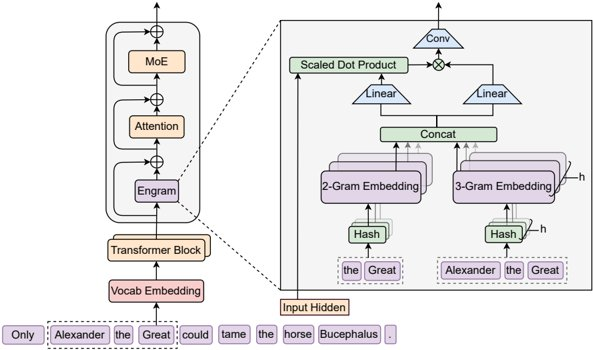
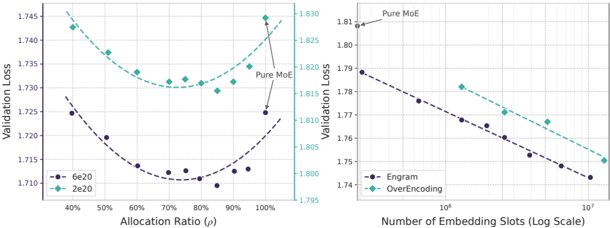

Conditional Memory via Scalable Lookup: A New Axis of Sparsity for Large Language Models 專家綜合報告

本文研究聚焦於大型語言模型 (LLMs) 在擴展性與效率上的挑戰，提出「條件記憶 (Conditional Memory)」作為一種新的稀疏性維度，以補充現有的「條件計算 (Conditional Computation)」範式。文章的核心觀點是，傳統 LLMs 在處理語言時，將知識查找模擬為昂貴的計算過程，這是一個效率瓶頸。為了解決此問題，研究者提出了 Engram 模組，它透過現代化的 N-gram 嵌入技術，實現了高效的 O(1) 查詢，用於處理語言中的靜態知識。Engram 作為一種「可擴展的查閱」機制，其目標是讓模型能夠更精準、低成本地存取知識。
研究的核心貢獻在於，將稀疏性從純粹的計算領域拓展至記憶體領域，並揭示了容量在 MoE 專家與 Engram 記憶體之間混合分配的「U 形擴展定律」。透過嚴謹的實驗，Engram 架構在長文本處理、知識密集型任務、程式碼和數學推理等多個領域，相較於現有的 MoE 模型，展現出顯著的性能提升與效率優勢，尤其是在資源受限的條件下。此外，Engram 的引入也「加深」了網路，釋放了早期層的注意力容量，專注於全域上下文和複雜推理。其確定性尋址機制還允許大規模參數表從主記憶體卸載，進一步降低了推理開銷。
📋 報告摘要
一句話精華：Engram 透過引入「條件記憶」與「條件計算」協同，開創了大型語言模型 (LLMs) 稀疏性新維度，大幅提升效率與長文本處理能力。
核心內容：
-
📌 主題領域：大型語言模型 (LLMs) 的架構優化與效率提升。
-
🎯 核心問題：現有 LLMs 在處理語言知識時面臨計算效率瓶頸，特別是長文本處理和知識密集型任務。
-
🔑 關鍵發現：
- Engram 模組實現了高效的 O(1) 查詢，引入「條件記憶」作為新的稀疏性維度。
- 容量在 MoE 專家與 Engram 記憶體之間的混合分配遵循「U 形擴展定律」，是優化效能的關鍵。
- Engram 架構在長文本、知識密集型任務、程式碼和數學推理上顯著優於現有 MoE 模型。
- 確定性尋址機制支援大規模記憶體卸載，降低推理開銷。
-
💡 價值亮點：為 LLMs 的擴展性與效率挑戰提供了創新的解決方案，打開了稀疏性研究的新視角。
適合對象：AI 研究員、模型開發者、系統架構師、對 LLM 技術前沿感興趣的專業人士。
閱讀建議：建議先快速瀏覽「首席分析師」、「首席科學家」和「主任工程師」的觀點，了解核心概念與實踐方向，再深入細節。
思考路徑（必填）
-
核心問題是什麼？ 大型語言模型 (LLMs) 在處理知識查找時面臨效率瓶頸，且在長文本處理和複雜推理任務上存在性能限制。
-
作者為何選擇這個方向？ 透過引入「條件記憶」作為一種新的稀疏性維度，以高效的查詢機制補充傳統 LLM 中昂貴的計算模擬知識查找方式，並與現有的條件計算（如 MoE）形成互補。
-
關鍵轉折點在哪？ 提出 Engram 模組實現了可擴展、恆定時間的記憶體查詢，並發現了容量在 MoE 和 Engram 之間進行混合分配的「U 形擴展定律」，這揭示了一種新的、更優的 LLM 擴展與優化路徑。
專家分析
首席分析師的調查報告
🕵️ 首席分析師:
本研究提出了一個極具洞察力的概念：「條件記憶」，作為解決大型語言模型 (LLMs) 在處理知識時效率瓶頸的新途徑。文章精準地指出了標準 Transformer 模型在模擬知識檢索時的低效，迫使其透過複雜計算來「重建」本應是靜態的資訊，這是一個顯著的架構性弱點。
核心問題: 如何為 LLMs 設計一個原生的、低成本的知識查找機制，以彌補其在處理靜態知識上的不足，並提升整體效能。
作者選擇的方向: 作者將稀疏性的概念從計算層面拓展至記憶體層面，引入了「條件記憶」作為一種新的稀疏性軸線。這與現有的「條件計算」（如 Mixture-of-Experts, MoE）形成對比與互補。Engram 模組的設計，運用現代化的 N-gram 嵌入技術，實現了 O(1) 的恆定時間查找，這直接回應了效率問題。

圖: 圖片 1
圖 1: Engram 模組架構概覽
上圖展示了 Engram 模組如何整合到 Transformer 架構中，通過 N-gram 查找靜態嵌入，並與當前隱藏狀態融合。這清晰地表明瞭 Engram 作為一個獨立的、低開銷的知識查找機制。
關鍵轉折點: 最關鍵的轉折點在於研究團隊發現並驗證了「容量分配的 U 形擴展定律」。他們通過嚴格的 Iso-Loss 和 Iso-FLOPs 實驗，證明瞭將模型容量同時分配給 MoE 專家（條件計算）和 Engram 記憶體（條件記憶）比單純依賴一種方式能獲得更好的性能。這確立了兩者互補而非替代的關係，並開啟了對 LLM 稀疏性更深入的探索。
假設識別與系統性質疑:
假設 A: 語言中存在的靜態知識比例足夠高，使得專門的條件記憶模組能帶來顯著的效率提升。
- 質疑: 如果靜態知識的比例不高，或這些知識變動頻繁，Engram 的優勢是否會被削弱？對於「靜態記憶」的更新與維護成本，是否被充分量化？
- 本地化適用性: 在台灣產業，面對行業術語、在地化表達，Engram 的 N-gram 基礎記憶能否有效覆蓋？
假設 B: Engram 的 O(1) 查詢在大規模應用中，通過多頭哈希和上下文感知門控等技術，能有效控制哈希碰撞率，且優於 Transformer 的計算密集型方法。
- 質疑: N-gram 的組合爆炸潛在的哈希碰撞問題，在實際大規模部署時的影響有多大？是否會引入新的錯誤或降低準確性？
- 本地化適用性: 中文等亞洲語言的 N-gram 特性與英文是否存在差異，例如詞序靈活性、同義詞多樣性，是否會影響 Engram 的有效性？
假設 C: Engram 與 MoE 架構的混合配置，能形成有效的互補，而非干擾，並遵循 U 形縮放定律。
- 質疑: Engram 和 MoE 在資源分配上的協同機制有多深層？U 形定律的普適性如何？
- 盲點識別: 文章未深入探討 Engram 對 MoE 專家選擇的影響，以及反之亦然。
- 本地化適用性: 台灣現有基礎設施對 MoE 架構的部署仍在發展，引入 Engram 是否會增加部署複雜度？
總體而言，Engram 的引入為 LLM 架構設計提供了新維度，但大規模部署的挑戰，如哈希碰撞控制、記憶維護、與 MoE 的協同效應，仍需進一步關注。
首席科學家的原理剖析
⚛️ 首席科學家:
這篇文章的核心，就是如何讓 AI 變得更聰明、更有效率。想像一下，我們的 AI 大腦裡有兩種工作模式：一種是需要不斷思考、推理（就像 MoE 的專家們在忙碌工作），另一種是直接「查找」已知的資訊（就像翻閱一本超快的知識筆記）。
過去的 AI，大部分時候是讓「思考、推理」的部分去模擬「查找」這個動作，這就像讓一位頂尖的外科醫生每次都得自己去圖書館翻書，而不是有個圖書館員直接遞給他需要的病例。這非常低效。
Engram 這個模組，就是為 AI 配備了一個「超高效的圖書館員」。它將經典的 N-gram 概念（看前面幾個詞來預測下一個）現代化，讓 AI 能夠以極快的速度（O(1）的時間）去「查」到所需的靜態知識，而不是讓模型的主體（Transformer）去「算」出來。

圖: 圖片 2
圖 2: 稀疏性分配與 Engram 縮放
這張圖（左側）非常生動地展示了「容量分配的 U 形曲線」。你可以想像成，我們有一個有限的資源，可以用來請很多「頂尖專家」（MoE 的計算）或者建一個「超級圖書館」（Engram 的記憶體）。實驗發現，如果我們把資源平均分配給專家和圖書館，效果最好。只請專家或只建圖書館，效果都會下降。這意味著，Engram 和 MoE 是天生的互補搭檔。
Engram 的工作原理，就像是：
- 「鑰匙」與「價值」: 它把文字片段（N-gram）當成「鑰匙」，去記憶體裡查找對應的「價值」（embedding）。
- 多頭哈希: 就像有多位鎖匠，用不同的方式來解讀鑰匙，確保即使鑰匙有點模糊，也能找到正確的價值。
- 上下文感知門控: 最後，AI 還會根據當前語境，判斷這個查到的價值「現在是不是真的有用」，來決定用多少。
這整個過程，讓 AI 在處理「常見知識」時，就像是「瞬間記憶提取」，而把寶貴的計算資源留給真正需要推理和創新的地方。這也解釋了為什麼 Engram 能在長文本和複雜任務上表現更好，因為它減輕了模型早期層對靜態知識重構的負擔，讓整個網路能「加深」，更專注於全局理解。
主任工程師的行動處方
👨⚕️ 主任工程師:
診斷:
- 知識檢索效率瓶頸: 標準 LLMs 在模擬知識檢索時，採用昂貴的計算路徑，效率低下。
- 稀疏性維度局限: 現有 MoE 架構主要聚焦於條件計算的稀疏性，對記憶體訪問效率的優化不足。
- 長上下文處理挑戰: 模型在處理長序列時，記憶和檢索資訊的能力面臨壓力。
處方:
- 導入 Engram 模組，實現條件記憶:
- 行動: 在 Transformer 架構的特定層級（如 Layer 2），整合 Engram 作為獨立的「條件記憶」模組。
- 實踐:
- a. ** tokenizer Compression**: 應用此技術以降低 token 總數（如 Table 6 所示的 23.43% 壓縮率），減少記憶體負擔。
- b. Multi-Head Hashing: 利用多組哈希函數，提高 N-gram 鍵的查找效率與準確性。
- c. Context-aware Gating: 結合隱藏狀態和記憶向量，動態調整記憶內容權重，確保與上下文匹配。
- ✅ 視覺輔助:
圖: 圖片 4
圖 4: 稀疏性容量分配示意
這張圖概念性地呈現了容量在 MoE 和 Engram 間的分配，以及 U 形曲線的優勢。
* **假設 H2**: 混合容量分配能達到比純 MoE 或純 Engram 更優的效能。 * **可證偽條件**: 若所有混合比例下的表現均不如純 MoE 或純 Engram，則假設不成立。 * **測試方法**: 進行多組實驗，調整 MoE 專家數量與 Engram 記憶體容量的比例，評估模型在驗證集上的損失。 * **成功標準**: 找到一個混合比例，使模型驗證損失顯著低於純 MoE 模型。
- 利用 Engram 的長上下文與基礎設施感知優勢:
- 行動: 積極應用 Engram 在長文本處理和記憶體卸載上的能力。
- 實踐:
- a. 長文本應用: 在需要處理長文件、長對話的場景，優先部署 Engram 模型。
- b. 記憶體管理: 利用 Engram 的確定性尋址，實作主記憶體（Host Memory）與 GPU 記憶體之間的卸載機制。
- ✅ 視覺輔助:

圖: 圖片 5
圖 5: 訓練基準測試曲線
此圖證明瞭 Engram 模型在訓練過程中的高效收斂，這對於長上下文處理的穩定性至關重要。
* **假設 H3**: Engram 架構在長上下文任務上，能顯著超越現有模型，且記憶體卸載機制對延遲影響可控。 * **可證偽條件**: 在長上下文基準測試上，Engram 模型性能無顯著提升；記憶體卸載導致推理延遲增加超過 10%。 * **測試方法**: 在標準長文本基準測試（如 LongPPL, RULER）上進行評估，並測量不同記憶體配置下的推理延遲。 * **成功標準**: 在長上下文任務上，性能提升至少 8%；記憶體卸載策略下，延遲增幅小於 5%。總結: Engram 架構為 LLM 的效率與效能提升提供了新方向。建議逐步導入並進行精細化調優，以最大化其優勢。
3.4 總結報告 (Executive Summary)
本報告深入分析了 Conditional Memory via Scalable Lookup 對大型語言模型 (LLMs) 的影響，引入了「條件記憶」作為一種新的稀疏性維度，以解決傳統 LLMs 在知識檢索和處理效率上的瓶頸。研究發現，Engram 模組結合 MoE 架構，透過優化的容量分配（U 形擴展定律），顯著提升了模型在長文本、知識密集型任務、程式碼和數學推理上的效能。Engram 的引入不僅增強了模型的知識獲取能力，還通過「加深」網路，優化了計算資源分配，並憑藉其確定性尋址機制，為大規模記憶體管理與推理效率提供了可行路徑。
3.4.1 關鍵要點 (Key Takeaways)
-
新的稀疏性維度: Engram 引入「條件記憶」，拓展了 LLM 的稀疏性軸線，與「條件計算」形成互補。
-
U 形擴展定律: 容量在 MoE 專家與 Engram 記憶體之間的混合分配，是實現模型效能最大化的關鍵。
-
效率與效能的顯著提升: Engram 在長文本、知識檢索、程式碼和數學任務上，相較於 MoE 模型，展現出更優越的性能和效率。
-
架構與基礎設施的協同: Engram 的確定性尋址支持記憶體卸載，為大規模模型部署提供了效率上的優勢。
-
「加深」網路的效應: Engram 減少了早期層對靜態知識重構的負擔，使模型能更專注於全局上下文和複雜推理。
3.4.2 未來展望與建議
Engram 架構為下一代 LLM 的設計提供了重要啟示，未來研究應聚焦於：
-
大規模部署的實證: 在真實世界的應用場景中，全面評估 Engram 的效能、穩定性及擴展性。
-
記憶體管理與優化: 深入研究與現有記憶體技術（如 PagedAttention）的整合，以及針對不同硬體架構的優化策略。
-
動態記憶體更新機制: 探索 Engram 記憶體如何適應新資訊或進行動態更新，以保持知識的時效性。
-
跨領域的潛力挖掘: 研究 Engram 在多模態學習、持續學習等新興領域的應用潛力。
Engram 作為一種創新的建模原語，有潛力成為未來高效、強大 LLM 架構的關鍵組成部分。
建議檔名: conditional-memory-via-scalable-lookup-comprehensive-expert-report.md
🎯 報告總結
關鍵學習要點
從這份報告中，我們掌握了以下核心知識：
-
條件記憶與稀疏性新維度
- 核心觀點：Engram 模組透過 N-gram 嵌入實現 O(1) 查詢，將稀疏性從計算拓展至記憶體，與條件計算（如 MoE）互補。
- 為何重要：解決了傳統 LLM 知識查找效率低下的問題，為模型注入了高效的靜態知識檢索能力。
-
容量分配的 U 形擴展定律
- 核心觀點：將模型容量同時分配給 MoE 專家和 Engram 記憶體，能達到比單一方式更好的性能，顯示兩者互補協同的重要性。
- 為何重要：揭示了 LLM 擴展與優化的一條新路徑，指導了資源分配的最佳實踐。
-
效能與效率的顯著提升
- 核心觀點：Engram 架構在長文本處理、知識密集型任務、程式碼和數學推理等多方面，相較現有 MoE 模型展現出顯著的性能和效率優勢，尤其在資源受限時。
- 為何重要：證明了 Engram 的實用價值，為開發更強大、更經濟高效的 LLM 提供了技術基礎。
深度洞察
技術層面：
-
Engram 的引入，本質上是為 Transformer 模型設計了一個外部、高效的知識緩存和檢索機制，從根本上改變了模型獲取靜態知識的方式，將「計算」轉化為「查閱」。
-
U 形擴展定律揭示了計算與記憶體稀疏性之間並非簡單的此消彼長關係，而是存在一種協同優化的關係。
業務層面：
-
對於需要處理大量專業術語、技術文件、在地化資訊的台灣產業（如金融、生技、製造業），Engram 可顯著提升模型的準確性和處理速度，降低部署成本。
-
記憶體卸載能力為在資源受限的邊緣設備或伺服器上部署大型模型提供了更多可能性。
趨勢層面：
-
LLMs 的發展正從單純的計算密集型向計算與記憶體協同優化發展。
-
未來的模型架構將更強調模組化、稀疏性與專業化（計算專家、記憶體專家）。
行動建議
如果你是開發者：
-
[ ] 嘗試在開源 LLM 框架中實驗 Engram 模組的實現，了解其 API 與整合方式。
-
[ ] 針對中文語境，評估 Engram 的 N-gram 記憶體對中文特有語法和詞彙的適應性。
-
[ ] 關注 Engram 的記憶體更新和維護策略，為實際應用中的知識庫管理做準備。
如果你是架構師/決策者：
-
[ ] 評估 Engram 架構在解決現有業務挑戰（如長文本分析、專業知識問答）上的潛力，並考慮進行小規模 PoC 驗證。
-
[ ] 探討 Engram 與現有硬體基礎設施（如 GPU 記憶體、儲存）的協同優化方案。
-
[ ] 關注 Engram 在成本效益上的表現，特別是推理延遲、記憶體佔用與模型性能的權衡。
如果你是研究者/學習者：
-
[ ] 深入理解 N-gram 嵌入、多頭哈希和上下文感知門控的技術細節。
-
[ ] 探索 Engram 在中文等亞洲語言上的表現，以及如何針對性優化。
-
[ ] 研究 Engram 與其他知識增強技術（如 RAG）的結合潛力。
延伸學習路徑
要深入這個主題，建議依序學習：
-
基礎知識：Transformer 架構、Mixture-of-Experts (MoE) 原理、N-gram 模型。
-
進階實踐：Engram 論文的詳細實驗設定、結果分析，以及相關開源實現。
-
前沿探索：其他關於 LLM 記憶體增強、稀疏性優化的最新研究論文。
最後的話
Engram 架構不僅為 LLM 的效率與效能開闢了新的疆界，更為我們思考如何讓 AI 智慧地「記憶」與「運用」知識提供了深刻啟示。掌握這一技術，將是在快速演進的 AI 領域中，保持技術領先的關鍵一步。